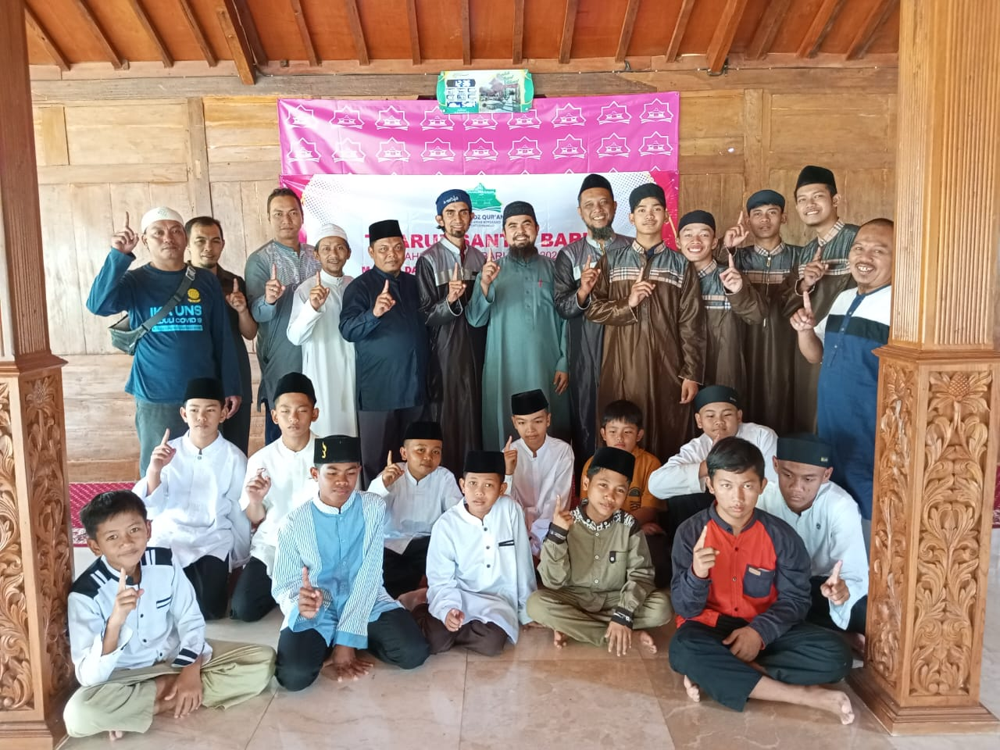
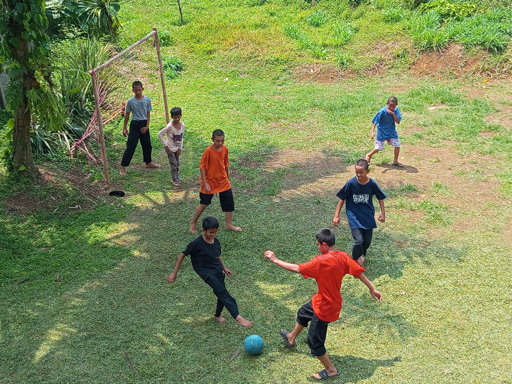
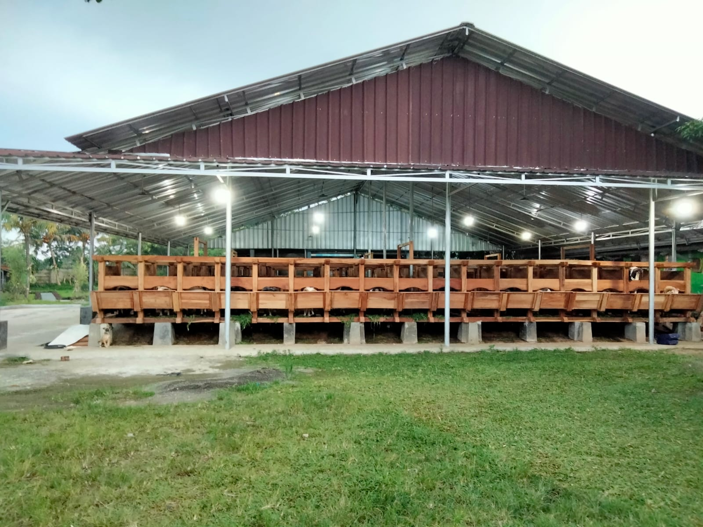

Fasilitas

Asrama Modern
Fasilitas asrama yang nyaman dan lengkap untuk para santri.

Lapangan bermain
Untuk santri bermain bola

Laboratorium
Laboratorium modern untuk pembelajaran entrepreneur

Laboratorium
Laboratorium modern untuk menunjang pembelajaran sains dan teknologi.
Laboratorium
Laboratorium modern untuk menunjang pembelajaran sains dan teknologi.
Laboratorium
Laboratorium modern untuk menunjang pembelajaran sains dan teknologi.